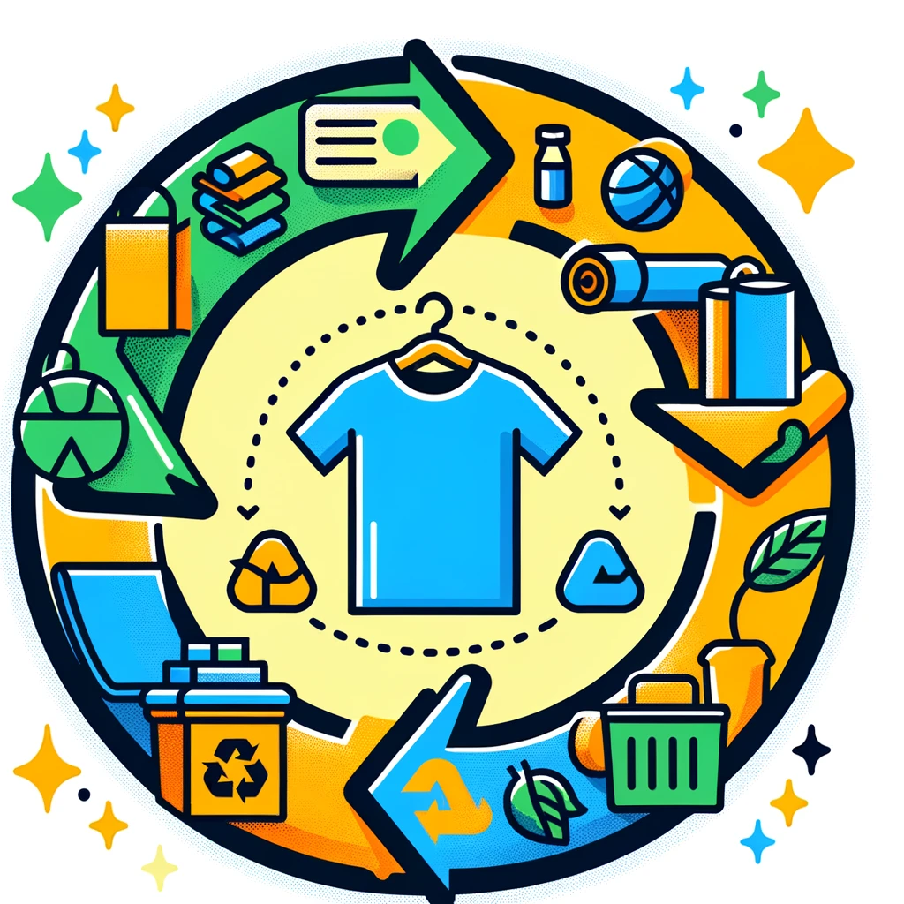
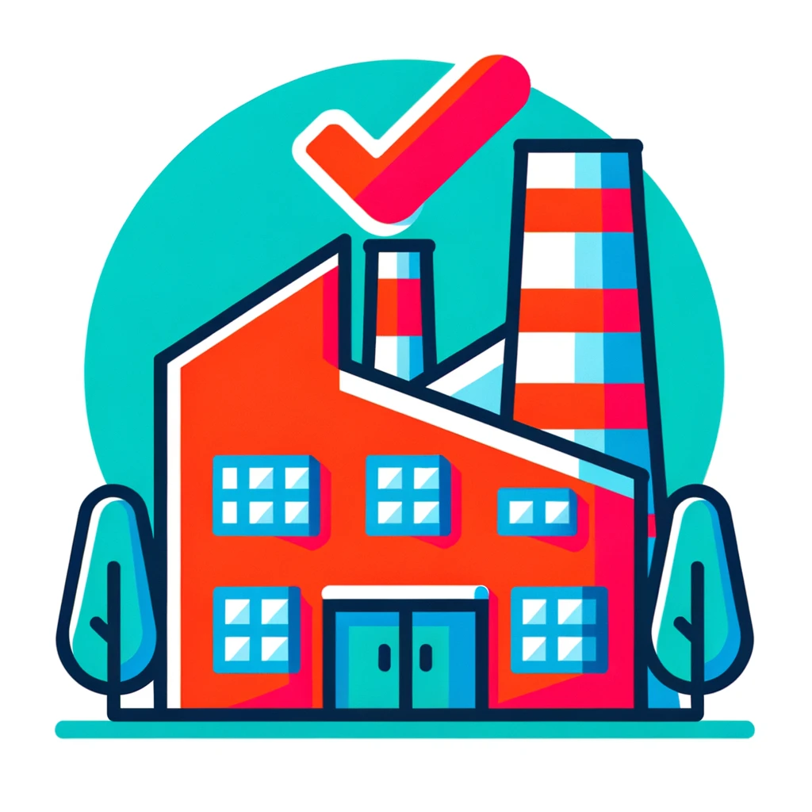
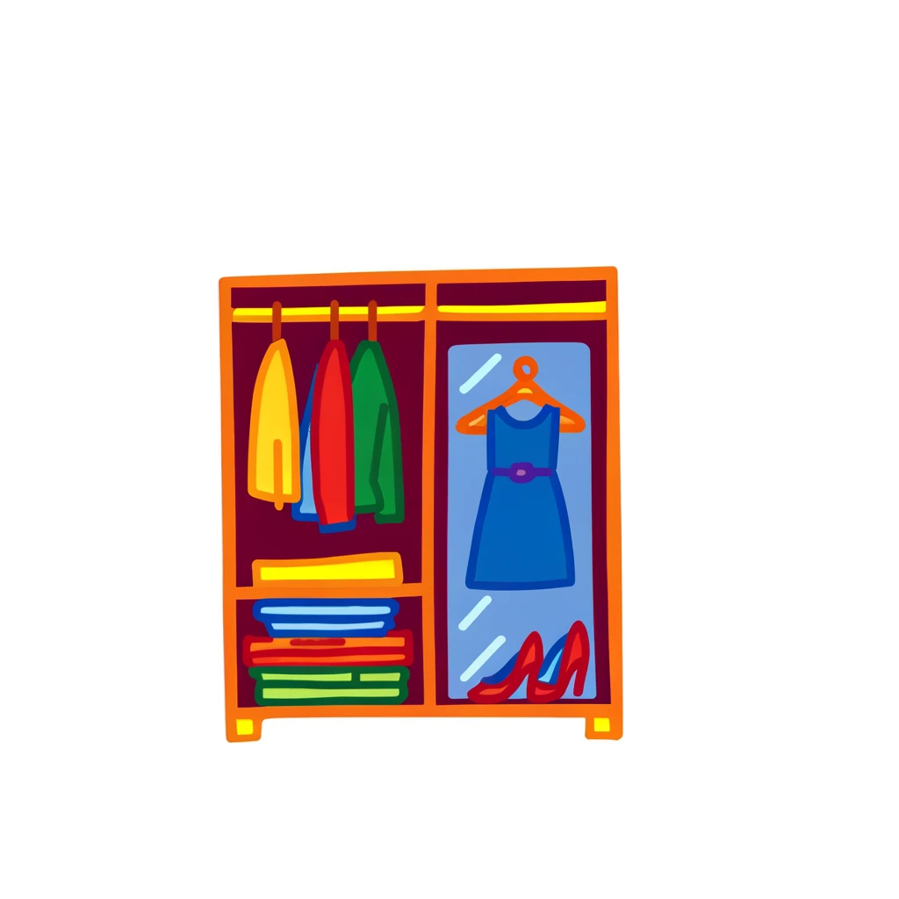

Utopian Fashion Industry
In a utopian fashion industry, sustainability, ethics, and transparency are at the forefront. This vision includes eco-friendly materials, fair labor practices, and a circular economy model. Let's explore the key components of this ideal future.
Sustainable Practices
Eco-friendly Materials
The shift towards eco-friendly materials
is vital for a sustainable fashion industry.
Organic cotton, hemp, and recycled polyester
are leading the charge, offering environmentally
conscious alternatives to traditional textiles.
These materials not only reduce environmental
impact but also promote better health
for the workers and the end consumers.
Zero-Waste Production
Zero-waste production methods are transforming
the fashion industry by minimizing waste
and maximizing efficiency. Techniques like zero-waste
pattern cutting and upcycling fabric scraps
ensure that every piece of material
is utilized, drastically reducing the industry's
environmental footprint.
Circular Economy

Embracing a circular economy in fashion
means designing products for longevity, reuse,
and recycling. This approach keeps materials
in use for as long as possible,
creating a more sustainable system that
reduces waste and conserves resources.
Fair Wages

Fair wages are a cornerstone of
an ethical fashion industry. By ensuring
that all workers are compensated fairly,
we can promote social justice and
improve the quality of life for
those who make our clothes. Fair Trade
certification and living wage campaigns are
crucial initiatives in this effort.
Safe Working Conditions

Ensuring safe and healthy working conditions
is essential for an ethical fashion industry.
Compliance with international labor standards
and regular factory audits help protect
workers from exploitation and harm,
fostering a more humane and sustainable
industry.
Empowerment
Worker empowerment through education and
skill development is vital for creating
a fair fashion industry. Programs that
provide training and opportunities for growth
not only enhance workers' livelihoods but
also contribute to the industry's overall
sustainability.
Supply Chain Transparency
Transparency in the supply chain is critical
for a sustainable fashion industry. Providing
detailed information about where and how
products are made helps consumers make
informed choices and holds brands accountable
for their practices.
Certification and Standards
Adherence to international standards and certifications
ensures that fashion brands operate sustainably
and ethically. Certifications like GOTS and
Fair Trade guarantee that products meet
high environmental and social criteria.
Informed Choices
Educating consumers about the impact of
their purchases is key to promoting
sustainable fashion. Awareness campaigns and
educational resources empower consumers to
make responsible choices that support
ethical and sustainable brands.
Mindful Consumption

Promoting a culture of mindful consumption
encourages buying less but better quality.
This approach values the longevity of
clothing and supports a sustainable fashion
industry that prioritizes quality over
quantity.